Основи програмування
Звіт до лабораторної роботи №9
Обробка рядків • Варіант 6
Оберіть розділ звіту
Лабораторна робота №9 / 01 з 08
1. Мета роботи
- Вивчити подання рядків і текстів у мові C як масивів символів.
- Опанувати функції обробки рядків із заголовних файлів string.h та ctype.h.
- Навчитися розробляти алгоритми та програми обробки рядків і текстів.
Лабораторна робота №9 / 02 з 08
2. Умови задач
Завдання 1 - варіант 6.1
Варіант 6 (у таблиці 24 варіанти, 30 - 24 = 6).
Увести з клавіатури рядок символів, включаючи розділові символи (пробіли, коми та крапки). Передбачити меню для виконання таких дій:
- виділити слова в рядку та підрахувати їх кількість. Слова - це лексеми, які не містять всередині розділових символів;
- кожне друге слово розбити на склади, враховуючи голосні та приголосні літери;
- видалити з рядка односкладові слова та замінити двоскладові слова на рядок "...".
Вивести на екран масив слів, їх кількість, слова, розбиті на склади, та перетворений рядок.
Завдання 2 - варіант 6.2
Увести з клавіатури текст з n рядків символів. Увести тематику тексту у вигляді окремого речення. Визначити в тексті ключові слова, які відповідають заданій тематиці. Слова - це лексеми, які не містять всередині розділових символів. Для пошуку ключових слів використати будь-який алгоритм. На основі ключових слів згенерувати акронім. Акронім - це слово, сформоване з окремих (перших) букв певної фрази або речення. Порахувати кількість згенерованих акронімів. Серед множини згенерованих акронімів вибрати найкращий. Критерій вибору найкращого акроніму визначити самостійно.
Загальні вимоги методички
Заборонено використовувати бібліотеку стандартних шаблонів STL, методи класу string, ітератори, контейнери. Дозволено використовувати функції заголовних файлів string.h, ctype.h, stdlib.h. Невиконання цих умов знижує оцінку на 50%.
Лабораторна робота №9 / 03 з 08
3. Аналіз задач
Завдання 1 - слова
Рядок зберігається як масив символів і вводиться функцією cin.getline, бо
операція >> читає лише до першого пропуску. Слова виділяє функція
strtok з роздільниками пробіл, кома і крапка. Вона псує рядок, тому працює з
копією.
Завдання 1 - поділ на склади
Слова в рядку англійські. Голосними вважаються літери a, e, i, o, u, y у будь-якому регістрі, решта символів вважаються приголосними. Слово ділиться на склади за простим правилом:
- кілька голосних поспіль дають один склад: rea-ding;
- склад закінчується голосною: com-pu-ter;
- кілька приголосних між голосними діляться навпіл, непарна переходить у наступний склад: sub-ject, sim-ple;
- слово без голосних вважається односкладовим.
Кількість складів дорівнює кількості груп голосних. Винятки англійської мови не враховуються: наприклад, make ділиться як ma-ke і вважається двоскладовим.
Завдання 1 - перетворення рядка
Новий рядок будується посимвольно, а вхідний не змінюється. Функція strcspn
дає довжину слова на поточній позиції. Розділові символи копіюються. Односкладове слово
видаляється разом із розділовими символами після нього, двоскладове замінюється на "...", а
довші слова лишаються без змін. Якщо всі слова односкладові, новий рядок порожній, і програма
про це повідомляє.
Завдання 1 - перевірка введення і структура
Занадто довгий рядок або рядок без жодного слова вводиться ще раз. Номер команди має бути числом від 0 до 3, інакше введення повторюється. Якщо у рядку одне слово, команда 2 повідомляє, що другого слова немає.
Таблиця 1 - Функції програми завдання 1
| Функція | Призначення |
|---|---|
main | виклик основних кроків програми |
welcome | виведення даних про автора та умови задачі |
inputLine | введення рядка з перевіркою |
extractWords | розбиття рядка на слова |
isVowel | перевірка, чи символ є голосною літерою |
splitIntoSyllables | поділ слова на склади, підрахунок складів |
printWords | команда 1: слова та їх кількість |
printSyllables | команда 2: кожне друге слово зі складами |
transformLine | команда 3: новий рядок |
runMenu | меню команд |
Завдання 2 - ключові слова
Текст вводиться в масив рядків. Меню в цьому завданні немає, дії виконуються послідовно. Ключове слово шукається за збігом початку слова:
- з тематики беруться слова від 4 символів, що починаються з літери, тому of, the, and не беруться;
- усі слова переводяться в нижній регістр;
- слово тексту (теж від 4 символів) є ключовим, якщо його перші 4 символи збігаються з першими 4 символами якогось слова тематики, наприклад, analytics і analysis;
- кожне ключове слово запам'ятовується один раз, їх не більше 12.
Порівняння робить функція strncmp. Роздільниками в тексті, крім пробілу, коми й
крапки, є ще крапка з комою, двокрапка, знаки оклику й питання.
Завдання 2 - акроніми і вибір найкращого
Акронім складається з великих перших літер ключових слів. Беруться всі набори ключових слів, що йдуть поспіль і містять щонайменше два слова. Для k ключових слів це k(k - 1) / 2 наборів. Однакові акроніми зберігаються один раз.
Найкращим вважається акронім, який легше вимовити. Його оцінка дорівнює кількості пар сусідніх літер, у яких одна голосна, а друга приголосна. Вибирається акронім з найбільшою оцінкою, а за однакової оцінки той, що знайдено раніше. Голосними вважаються A, E, I, O, U, Y.
Текст і тематика мають бути англійськими, слова з українськими літерами програма не бере до уваги.
Завдання 2 - перевірка введення і структура
Кількість рядків вводиться від 1 до 10 з перевіркою. Занадто довгий рядок вводиться ще раз, так само як і тематика без жодного слова від 4 символів. Якщо ключових слів менше двох, програма повідомляє, що акронім скласти неможливо.
Таблиця 2 - Функції програми завдання 2
| Функція | Призначення |
|---|---|
main | виклик основних кроків програми |
welcome | виведення даних про автора та умови задачі |
inputLine | введення одного рядка з перевіркою довжини |
inputText | введення кількості рядків і тексту |
isLongWord | перевірка першого символу і довжини слова |
toLowerCase | переведення слова в нижній регістр |
inputTopic | введення тематики і виділення її слів |
isTopicWord | перевірка, чи слово відповідає тематиці |
addKeyword | додавання ключового слова без повторів |
findKeywords | пошук і виведення ключових слів |
addAcronym | додавання акроніма без повторів |
generateAcronyms | складання акронімів |
calculateScore | оцінка акроніма |
printAcronyms | виведення акронімів і найкращого з них |
Джерела: Ковалюк Т.В. Алгоритмізація та програмування, 2024; Ковалюк Т.В., Петрівський В.Я. Гарний стиль програмування мовами C, C++, C#, 2025; Deitel P., Deitel H. C++ How to Program (розділ про рядки на основі покажчиків).
Лабораторна робота №9 / 04 з 08
4. Блок-схеми алгоритмів
Завдання 1 - варіант 6.1

welcome (виведення даних про автора та умови задачі)
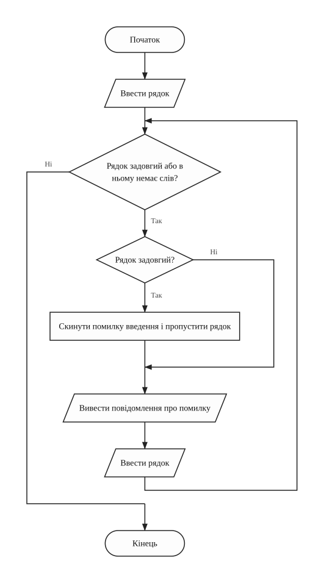
inputLine (введення рядка з перевіркою)
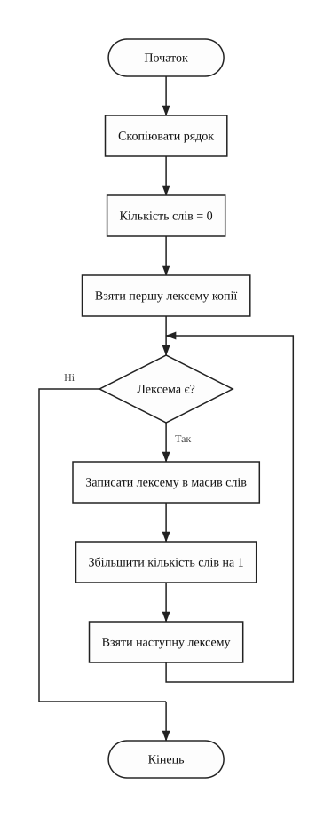
extractWords (розбиття рядка на слова)
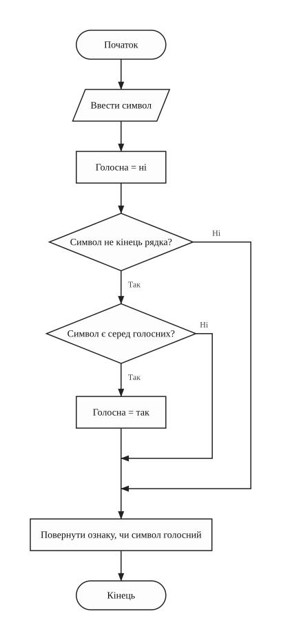
isVowel (перевірка, чи символ є голосною літерою)
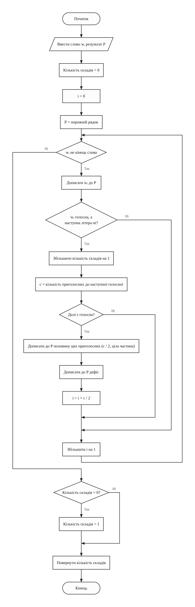
splitIntoSyllables (поділ слова на склади)
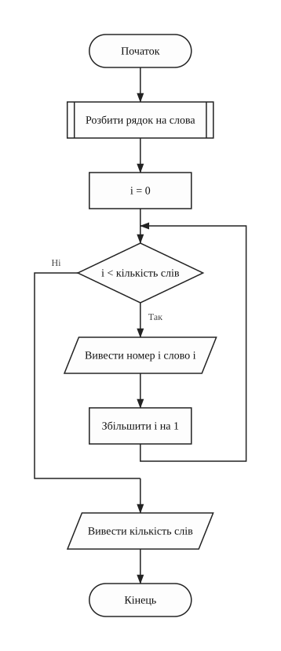
printWords (команда 1: виведення слів та їх кількості)
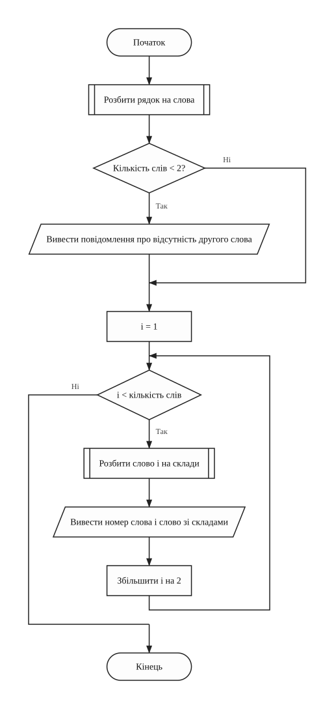
printSyllables (команда 2: кожне друге слово зі складами)
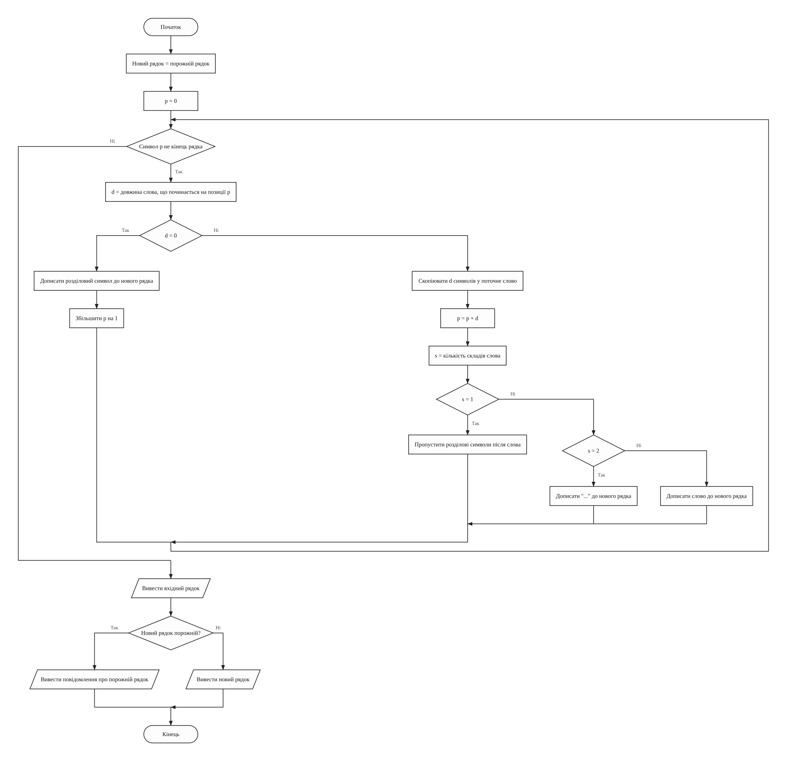
transformLine (команда 3: побудова нового рядка)
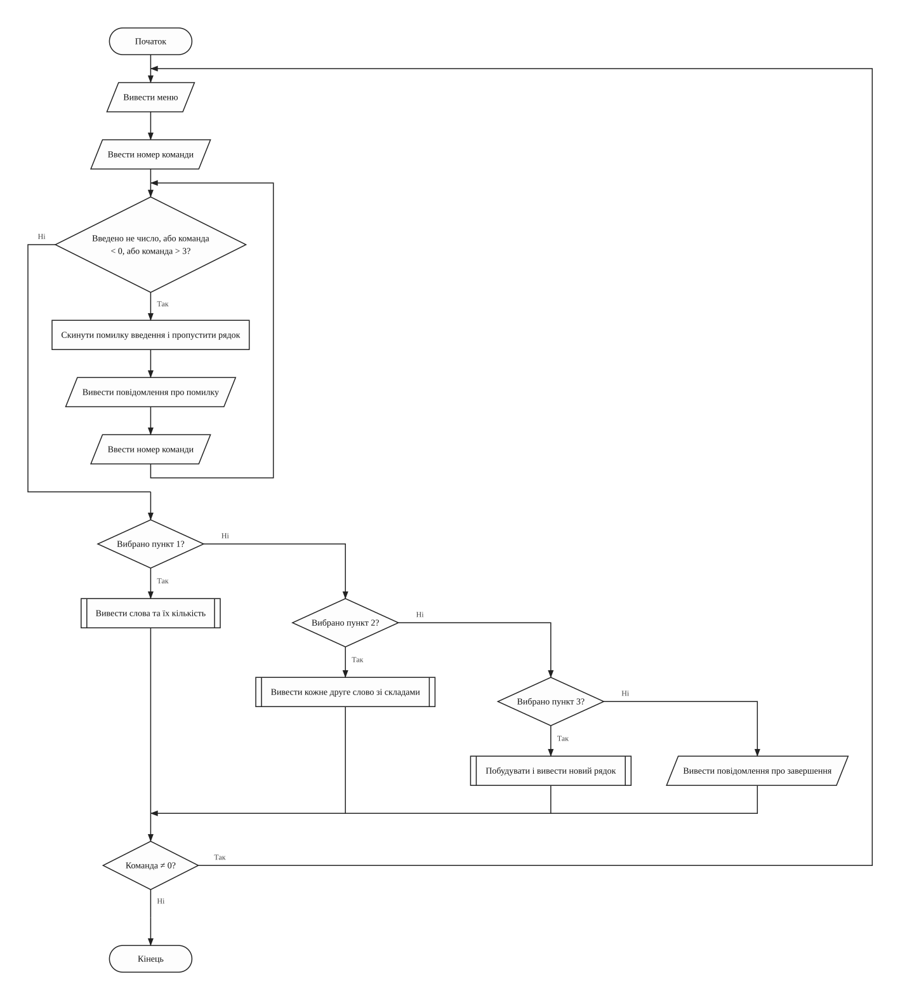
runMenu (меню команд)
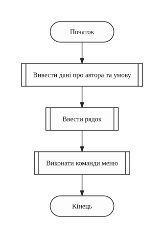
main (головна функція)Завдання 2 - варіант 6.2

welcome (виведення даних про автора та умови задачі)
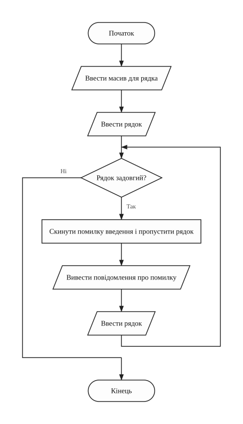
inputLine (введення одного рядка з перевіркою довжини)
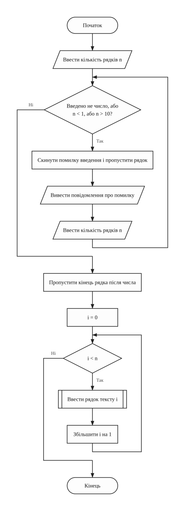
inputText (введення кількості рядків і тексту)
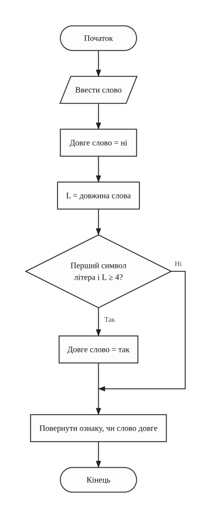
isLongWord (перевірка першого символу і довжини слова)
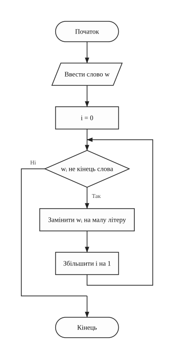
toLowerCase (переведення слова в нижній регістр)
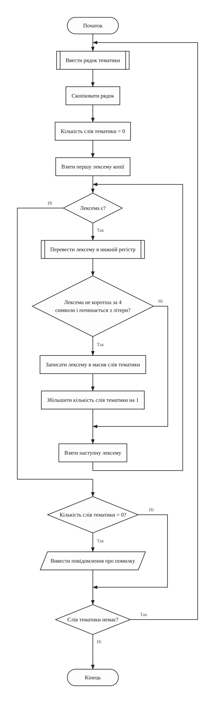
inputTopic (введення тематики і виділення її слів)
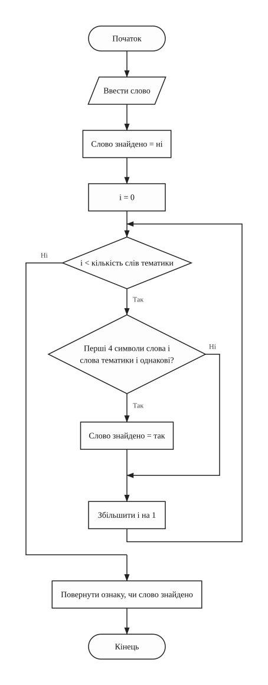
isTopicWord (перевірка, чи слово відповідає тематиці)
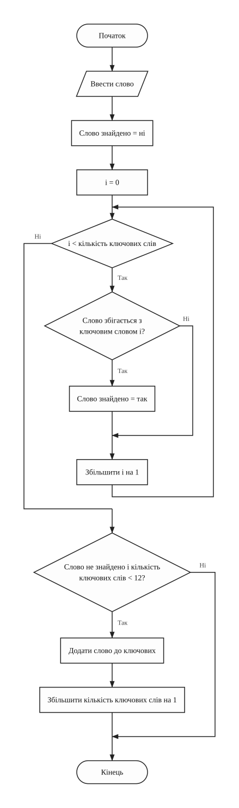
addKeyword (додавання слова до ключових без повторів)
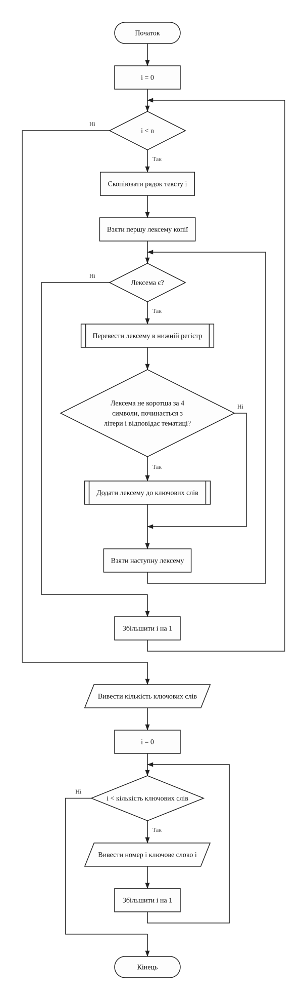
findKeywords (пошук ключових слів у тексті)
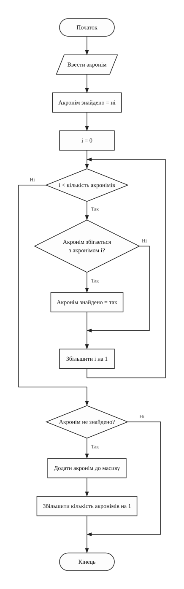
addAcronym (додавання акроніма без повторів)
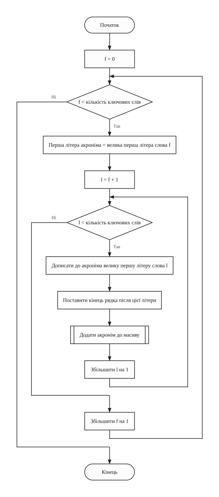
generateAcronyms (складання акронімів із наборів ключових слів)
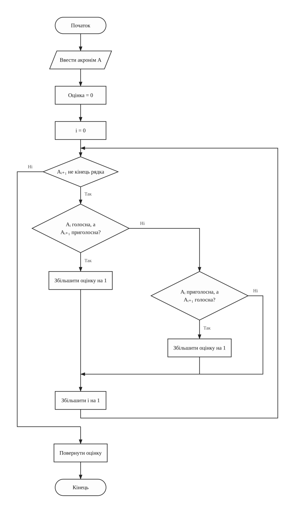
calculateScore (оцінка акроніма)
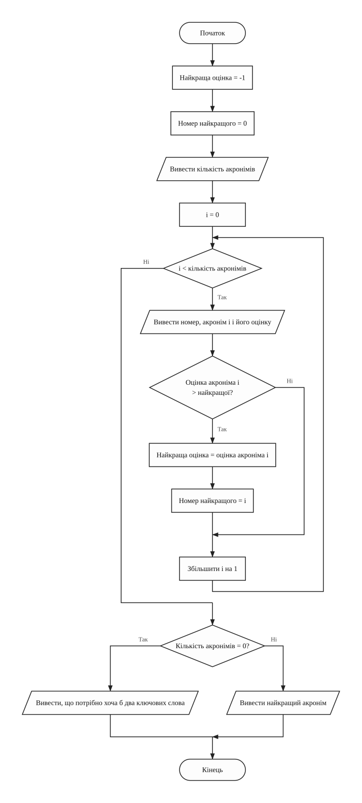
printAcronyms (виведення акронімів і вибір найкращого)
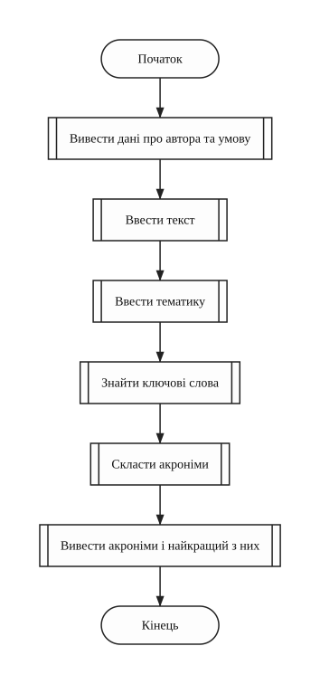
main (головна функція)Лабораторна робота №9 / 05 з 08
5. Тексти програм
Завдання 1 - варіант 6.1
Файл task1.cpp
/////////////////////////////////////////////////////////////////////
// Ім'я файлу: task1.cpp
// Автор: Шимко Матвій, гр. ІПЗ-11(3)
// Номер версії модуля: version 1
// Запланована ціль: лабораторна робота №9, завдання 1, варіант 6.1.
// Виділити слова в рядку, розбити кожне друге слово на
// склади, видалити односкладові слова і замінити
// двоскладові на "...".
/////////////////////////////////////////////////////////////////////
#include <cstring>
#include <iostream>
using namespace std;
//=========== константи
const int MAX_LENGTH = 256; // найбільший розмір рядка
const int MAX_WORDS = MAX_LENGTH / 2; // більше слів у рядок не вміститься
const char SEPARATORS[] = " ,."; // розділові символи
const char VOWELS[] = "aeiouyAEIOUY"; // голосні літери
//=========== глобальні змінні
char line[MAX_LENGTH] = ""; // введений рядок
char words[MAX_WORDS][MAX_LENGTH] = {""}; // масив слів
int wordCount = 0; // кількість слів
int choice = 0; // номер команди меню
/*
* Функція виводить дані про автора та умову задачі
* Параметри: немає
* Значення, що повертаються: немає
*/
void welcome()
{
cout << "Lab work 9. Task 1. Variant 6." << endl;
cout << "Author: Matvii Shimko, group IPZ-11(3)" << endl << endl;
cout << "Find the words of a line, split every second word into syllables,"
<< endl;
cout << "remove one-syllable words and replace two-syllable words with ..."
<< endl
<< endl;
}
/*
* Функція вводить рядок. Занадто довгий рядок або рядок без слів
* вводиться ще раз
* Параметри: немає
* Значення, що повертаються: немає
*/
void inputLine()
{
cout << "Enter a line: ";
cin.getline(line, MAX_LENGTH);
while (cin.fail() || strspn(line, SEPARATORS) == strlen(line))
{
if (cin.fail())
{
cin.clear(); // скинути помилку введення
cin.ignore(1000, '\n'); // і пропустити занадто довгий рядок
}
cout << "Error! Enter up to " << MAX_LENGTH - 1
<< " characters with at least one word: ";
cin.getline(line, MAX_LENGTH);
}
}
/*
* Функція розбиває рядок на слова. Функція strtok псує рядок, тому
* працює з його копією
* Параметри: немає
* Значення, що повертаються: немає
*/
void extractWords()
{
char copy[MAX_LENGTH];
char* word = NULL;
strcpy(copy, line);
wordCount = 0;
word = strtok(copy, SEPARATORS);
while (word != NULL)
{
strcpy(words[wordCount], word);
wordCount++;
word = strtok(NULL, SEPARATORS);
}
}
/*
* Функція перевіряє, чи є символ голосною літерою
* Параметри: symbol - символ, який перевіряється
* Значення, що повертаються: true, якщо це голосна літера
*/
bool isVowel(char symbol)
{
bool isFound = false;
if (symbol != '\0')
{
if (strchr(VOWELS, symbol) != NULL)
{
isFound = true;
}
}
return isFound;
}
/*
* Функція розбиває слово на склади. Кілька голосних поспіль дають один
* склад, склад закінчується голосною, а приголосні між двома голосними
* діляться навпіл
* Параметри: word - слово, parts - слово з дефісами між складами
* Значення, що повертаються: кількість складів
*/
int splitIntoSyllables(char* word, char* parts)
{
int syllableCount = 0;
int consonantCount = 0; // приголосні до наступної голосної
int i = 0;
parts[0] = '\0';
while (word[i] != '\0')
{
strncat(parts, word + i, 1);
if (isVowel(word[i]) && !isVowel(word[i + 1]))
{
syllableCount++;
consonantCount = strcspn(word + i + 1, VOWELS);
if (word[i + 1 + consonantCount] != '\0')
{
strncat(parts, word + i + 1, consonantCount / 2);
strcat(parts, "-");
i = i + consonantCount / 2;
}
}
i++;
}
// слово без голосних вважається односкладовим
if (syllableCount == 0)
{
syllableCount = 1;
}
return syllableCount;
}
/*
* Команда меню: виділяє слова і виводить масив слів та їх кількість
* Параметри: немає
* Значення, що повертаються: немає
*/
void printWords()
{
extractWords();
for (int i = 0; i < wordCount; i++)
{
cout << i + 1 << ". " << words[i] << endl;
}
cout << "Number of words: " << wordCount << endl;
}
/*
* Команда меню: виводить кожне друге слово, розбите на склади
* Параметри: немає
* Значення, що повертаються: немає
*/
void printSyllables()
{
char parts[2 * MAX_LENGTH]; // слово з дефісами
extractWords();
if (wordCount < 2)
{
cout << "The line has no second word." << endl;
}
for (int i = 1; i < wordCount; i = i + 2)
{
splitIntoSyllables(words[i], parts);
cout << i + 1 << ". " << parts << endl;
}
}
/*
* Команда меню: будує новий рядок. Розділові символи копіюються,
* односкладове слово видаляється разом із символами після нього,
* двоскладове замінюється на "...", довші слова лишаються
* Параметри: немає
* Значення, що повертаються: немає
*/
void transformLine()
{
char word[MAX_LENGTH];
char parts[2 * MAX_LENGTH];
char result[2 * MAX_LENGTH] = ""; // новий рядок
int position = 0; // поточне місце в рядку line
int length = 0; // довжина поточного слова
int syllableCount = 0;
while (line[position] != '\0')
{
length = strcspn(line + position, SEPARATORS);
if (length == 0)
{
strncat(result, line + position, 1);
position++;
}
else
{
strncpy(word, line + position, length);
word[length] = '\0'; // strncpy не ставить кінець рядка
position = position + length;
syllableCount = splitIntoSyllables(word, parts);
if (syllableCount == 1)
{
position = position + strspn(line + position, SEPARATORS);
}
else if (syllableCount == 2)
{
strcat(result, "...");
}
else
{
strcat(result, word);
}
}
}
cout << "Source line: " << line << endl;
if (result[0] == '\0')
{
cout << "All words are removed, the new line is empty." << endl;
}
else
{
cout << "New line: " << result << endl;
}
}
/*
* Функція показує меню і виконує вибрані команди
* Параметри: немає
* Значення, що повертаються: немає
*/
void runMenu()
{
do
{
cout << endl << "1 - find the words and count them" << endl;
cout << "2 - split every second word into syllables" << endl;
cout << "3 - remove one-syllable words, replace two-syllable words"
<< endl;
cout << "0 - exit" << endl;
cout << "Enter a command (from 0 to 3): ";
cin >> choice;
while (cin.fail() || choice < 0 || choice > 3)
{
cin.clear(); // скинути помилку введення
cin.ignore(1000, '\n'); // і пропустити неправильний рядок
cout << "Error! Enter a command from 0 to 3: ";
cin >> choice;
}
switch (choice)
{
case 1 : printWords(); break;
case 2 : printSyllables(); break;
case 3 : transformLine(); break;
default : cout << "End of work." << endl; break;
}
} while (choice != 0);
}
int main()
{
welcome();
inputLine();
runMenu();
return 0;
}
Завдання 2 - варіант 6.2
Файл task2.cpp
/////////////////////////////////////////////////////////////////////
// Ім'я файлу: task2.cpp
// Автор: Шимко Матвій, гр. ІПЗ-11(3)
// Номер версії модуля: version 1
// Запланована ціль: лабораторна робота №9, завдання 2, варіант 6.2.
// Знайти в тексті ключові слова за тематикою, скласти
// з них акроніми і вибрати найкращий.
/////////////////////////////////////////////////////////////////////
#include <cctype>
#include <cstring>
#include <iostream>
using namespace std;
//=========== константи
const int MAX_LINES = 10; // найбільша кількість рядків тексту
const int MAX_LENGTH = 256; // найбільший розмір рядка
const int MAX_TOPIC_WORDS = 64; // слів з 4 літер у рядку не більше
const int MAX_KEYWORDS = 12; // найбільша кількість ключових слів
const int MAX_ACRONYMS = 66; // пар "перше - останнє" ключове слово
const int MATCH_LENGTH = 4; // скільки перших літер має збігатися
const char SEPARATORS[] = " ,.;:!?"; // розділові символи
const char VOWELS[] = "AEIOUY"; // голосні літери
//=========== глобальні змінні
char text[MAX_LINES][MAX_LENGTH] = {""}; // введений текст
char topic[MAX_LENGTH] = ""; // тематика тексту
char topicWords[MAX_TOPIC_WORDS][MAX_LENGTH] = {""}; // слова тематики
char keywords[MAX_KEYWORDS][MAX_LENGTH] = {""}; // знайдені ключові слова
char acronyms[MAX_ACRONYMS][MAX_KEYWORDS + 1] = {""}; // згенеровані акроніми
int lineCount = 0; // кількість рядків тексту
int topicWordCount = 0; // кількість слів тематики
int keywordCount = 0; // кількість ключових слів
int acronymCount = 0; // кількість акронімів
/*
* Функція виводить дані про автора та умову задачі
* Параметри: немає
* Значення, що повертаються: немає
*/
void welcome()
{
cout << "Lab work 9. Task 2. Variant 6." << endl;
cout << "Author: Matvii Shimko, group IPZ-11(3)" << endl << endl;
cout << "Find keywords of a text by its topic, make acronyms from them"
<< endl;
cout << "and choose the best acronym." << endl << endl;
}
/*
* Функція вводить один рядок. Занадто довгий рядок вводиться ще раз
* Параметри: target - куди записати рядок
* Значення, що повертаються: немає
*/
void inputLine(char* target)
{
cin.getline(target, MAX_LENGTH);
while (cin.fail())
{
cin.clear(); // скинути помилку введення
cin.ignore(1000, '\n'); // і пропустити занадто довгий рядок
cout << "Error! The line is too long. Enter it again: ";
cin.getline(target, MAX_LENGTH);
}
}
/*
* Функція вводить кількість рядків і сам текст
* Параметри: немає
* Значення, що повертаються: немає
*/
void inputText()
{
cout << "Enter the number of lines (from 1 to " << MAX_LINES << "): ";
cin >> lineCount;
while (cin.fail() || lineCount < 1 || lineCount > MAX_LINES)
{
cin.clear(); // скинути помилку введення
cin.ignore(1000, '\n'); // і пропустити неправильний рядок
cout << "Error! Enter the number of lines from 1 to " << MAX_LINES
<< ": ";
cin >> lineCount;
}
cin.ignore(1000, '\n'); // кінець рядка після числа
for (int i = 0; i < lineCount; i++)
{
cout << "Line " << i + 1 << ": ";
inputLine(text[i]);
}
}
/*
* Функція перевіряє, що слово починається з літери і не коротше
* за MATCH_LENGTH символів
* Параметри: word - слово, яке перевіряється
* Значення, що повертаються: true, якщо слово можна брати до уваги
*/
bool isLongWord(char* word)
{
bool isLong = false;
int length = strlen(word);
if (isalpha(word[0]) && length >= MATCH_LENGTH)
{
isLong = true;
}
return isLong;
}
/*
* Функція переводить слово в нижній регістр, щоб порівняння не
* залежало від великих літер
* Параметри: word - слово
* Значення, що повертаються: немає
*/
void toLowerCase(char* word)
{
for (int i = 0; word[i] != '\0'; i++)
{
word[i] = tolower(word[i]);
}
}
/*
* Функція вводить тематику і виділяє з неї слова з 4 і більше літер.
* Якщо таких слів немає, тематика вводиться ще раз
* Параметри: немає
* Значення, що повертаються: немає
*/
void inputTopic()
{
char copy[MAX_LENGTH];
char* word = NULL;
do
{
cout << "Enter the topic of the text: ";
inputLine(topic);
strcpy(copy, topic);
topicWordCount = 0;
word = strtok(copy, SEPARATORS);
while (word != NULL)
{
toLowerCase(word);
if (isLongWord(word))
{
strcpy(topicWords[topicWordCount], word);
topicWordCount++;
}
word = strtok(NULL, SEPARATORS);
}
if (topicWordCount == 0)
{
cout << "Error! The topic needs a word of at least " << MATCH_LENGTH
<< " letters." << endl;
}
} while (topicWordCount == 0);
}
/*
* Функція перевіряє, чи відповідає слово тематиці: його початок
* має збігатися з початком хоча б одного слова тематики
* Параметри: word - слово в нижньому регістрі
* Значення, що повертаються: true, якщо слово відповідає тематиці
*/
bool isTopicWord(char* word)
{
bool isFound = false;
for (int i = 0; i < topicWordCount; i++)
{
if (strncmp(word, topicWords[i], MATCH_LENGTH) == 0)
{
isFound = true;
}
}
return isFound;
}
/*
* Функція додає слово до ключових, якщо його там ще немає
* і в масиві є місце
* Параметри: word - слово в нижньому регістрі
* Значення, що повертаються: немає
*/
void addKeyword(char* word)
{
bool isFound = false;
for (int i = 0; i < keywordCount; i++)
{
if (strcmp(word, keywords[i]) == 0)
{
isFound = true;
}
}
if (!isFound && keywordCount < MAX_KEYWORDS)
{
strcpy(keywords[keywordCount], word);
keywordCount++;
}
}
/*
* Функція переглядає текст і збирає ключові слова
* Параметри: немає
* Значення, що повертаються: немає
*/
void findKeywords()
{
char copy[MAX_LENGTH];
char* word = NULL;
for (int i = 0; i < lineCount; i++)
{
strcpy(copy, text[i]);
word = strtok(copy, SEPARATORS);
while (word != NULL)
{
toLowerCase(word);
if (isLongWord(word) && isTopicWord(word))
{
addKeyword(word);
}
word = strtok(NULL, SEPARATORS);
}
}
cout << endl << "Keywords: " << keywordCount << endl;
for (int i = 0; i < keywordCount; i++)
{
cout << i + 1 << ". " << keywords[i] << endl;
}
}
/*
* Функція додає акронім, якщо такого ще немає
* Параметри: acronym - новий акронім
* Значення, що повертаються: немає
*/
void addAcronym(char* acronym)
{
bool isFound = false;
for (int i = 0; i < acronymCount; i++)
{
if (strcmp(acronym, acronyms[i]) == 0)
{
isFound = true;
}
}
if (!isFound)
{
strcpy(acronyms[acronymCount], acronym);
acronymCount++;
}
}
/*
* Функція складає акроніми з перших літер кожного набору ключових слів,
* що йдуть поспіль і містять щонайменше два слова
* Параметри: немає
* Значення, що повертаються: немає
*/
void generateAcronyms()
{
char acronym[MAX_KEYWORDS + 1];
for (int first = 0; first < keywordCount; first++)
{
acronym[0] = toupper(keywords[first][0]);
for (int last = first + 1; last < keywordCount; last++)
{
acronym[last - first] = toupper(keywords[last][0]);
acronym[last - first + 1] = '\0';
addAcronym(acronym);
}
}
}
/*
* Функція рахує оцінку акроніма: кількість пар сусідніх літер, де
* голосна стоїть поруч із приголосною. Чим більше таких пар, тим легше
* вимовити акронім
* Параметри: acronym - акронім
* Значення, що повертаються: оцінка
*/
int calculateScore(char* acronym)
{
int score = 0;
for (int i = 0; acronym[i + 1] != '\0'; i++)
{
if (strchr(VOWELS, acronym[i]) != NULL
&& strchr(VOWELS, acronym[i + 1]) == NULL)
{
score++;
}
else if (strchr(VOWELS, acronym[i]) == NULL
&& strchr(VOWELS, acronym[i + 1]) != NULL)
{
score++;
}
}
return score;
}
/*
* Функція виводить усі акроніми з оцінками і найкращий акронім. За
* однакової оцінки найкращим лишається той, що знайдено раніше
* Параметри: немає
* Значення, що повертаються: немає
*/
void printAcronyms()
{
int bestScore = -1;
int bestNumber = 0;
cout << endl << "Acronyms: " << acronymCount << endl;
for (int i = 0; i < acronymCount; i++)
{
cout << i + 1 << ". " << acronyms[i] << ", score "
<< calculateScore(acronyms[i]) << endl;
if (calculateScore(acronyms[i]) > bestScore)
{
bestScore = calculateScore(acronyms[i]);
bestNumber = i;
}
}
if (acronymCount == 0)
{
cout << "At least two keywords are needed." << endl;
}
else
{
cout << "Best acronym: " << acronyms[bestNumber] << endl;
}
}
int main()
{
welcome();
inputText();
inputTopic();
findKeywords();
generateAcronyms();
printAcronyms();
return 0;
}
Лабораторна робота №9 / 06 з 08
6. Результати виконання роботи
Завдання 1 - варіант 6.1

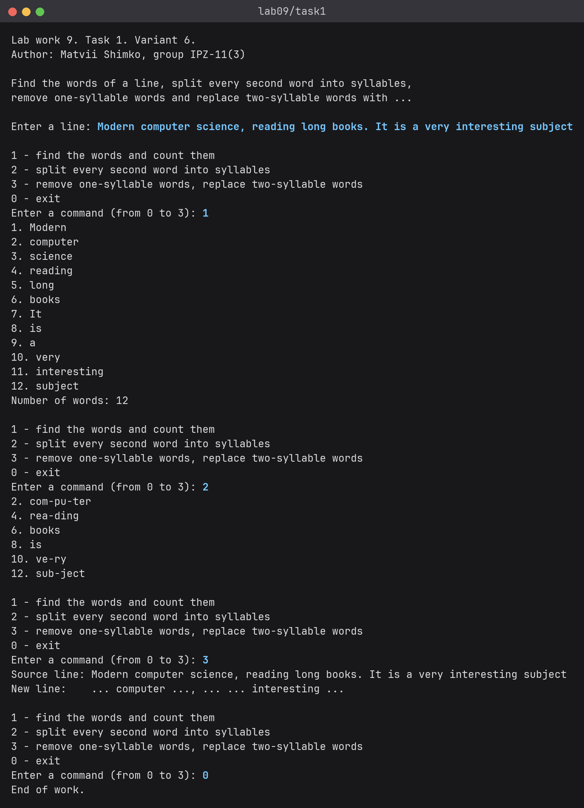

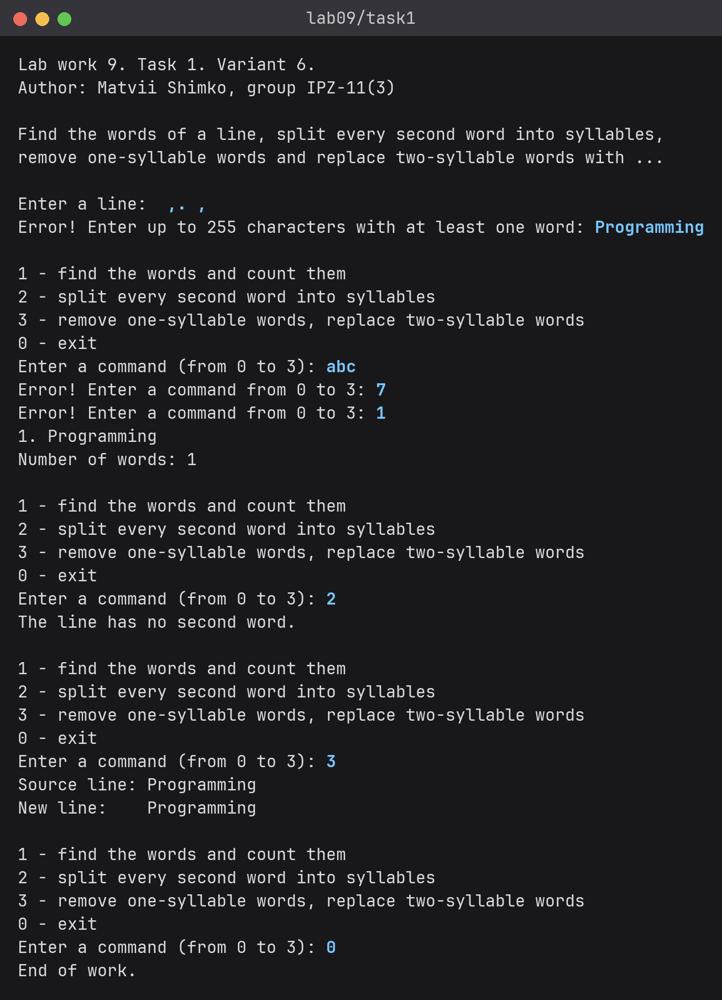

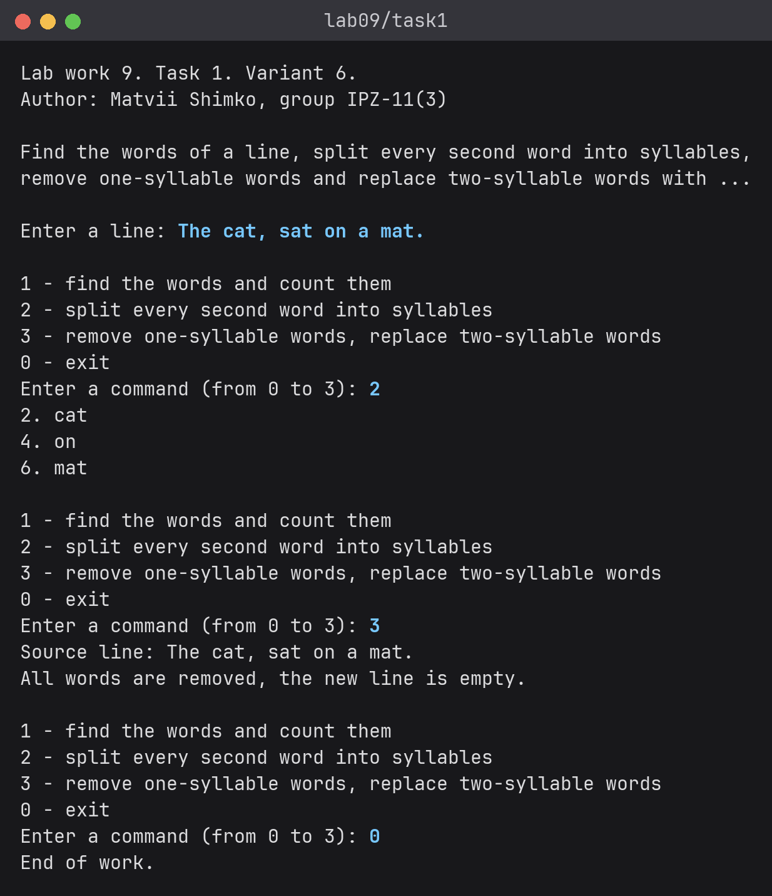
Завдання 2 - варіант 6.2

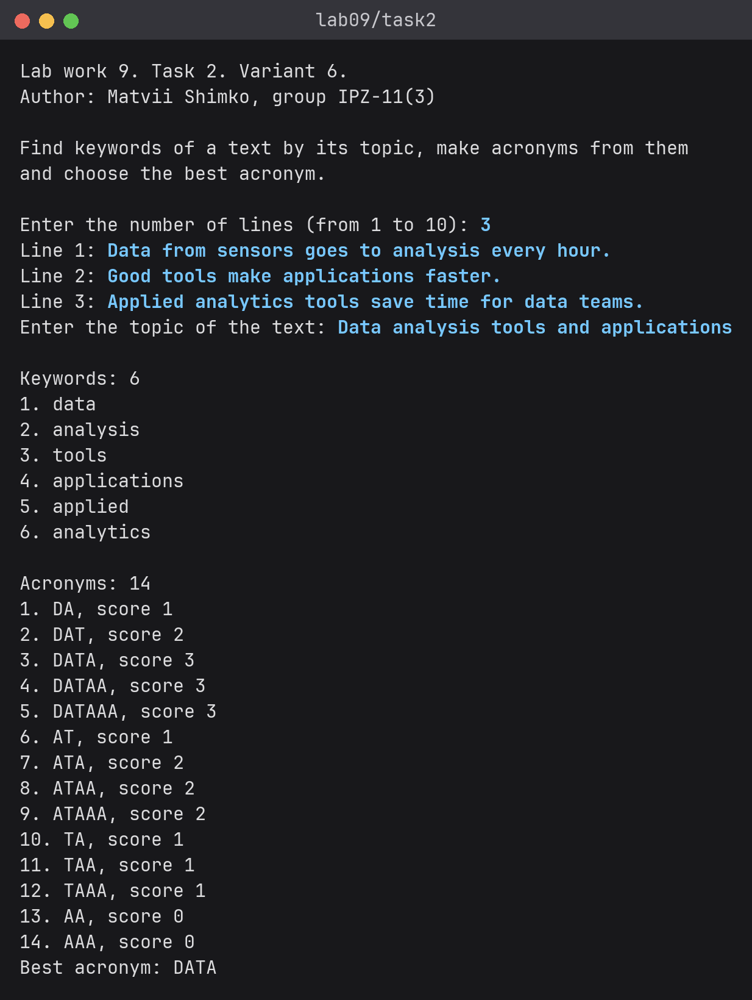

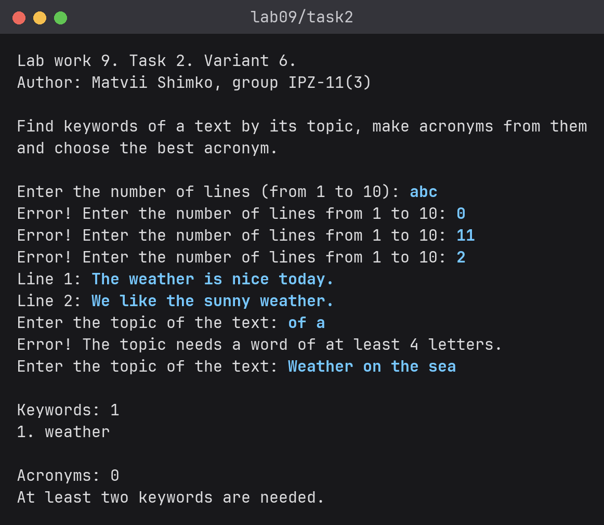

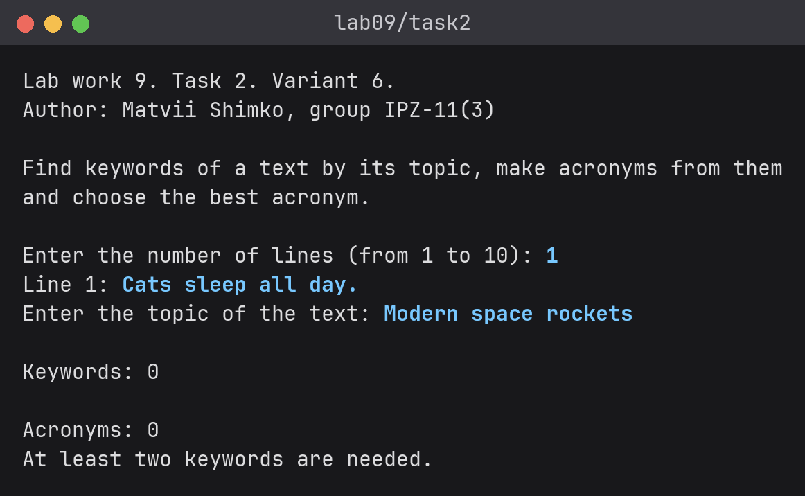
Лабораторна робота №9 / 07 з 08
7. Аналіз достовірності результатів
Завдання 1 - ручна перевірка
Контрольний рядок: Modern computer science, reading long books. It is a very interesting subject. У ньому 12 слів. Для кожного слова вручну знайдено групи голосних і застосовано правило поділу.
Таблиця 3 - Контрольний рядок завдання 1
| № | Слово | Групи голосних | Складів | Склади (для парних номерів) | У новому рядку |
|---|---|---|---|---|---|
| 1 | Modern | o, e | 2 | ... | |
| 2 | computer | o, u, e | 3 | com-pu-ter | computer |
| 3 | science | ie, e | 2 | ... | |
| 4 | reading | ea, i | 2 | rea-ding | ... |
| 5 | long | o | 1 | видалено | |
| 6 | books | oo | 1 | books | видалено |
| 7 | It | I | 1 | видалено | |
| 8 | is | i | 1 | is | видалено |
| 9 | a | a | 1 | видалено | |
| 10 | very | e, y | 2 | ve-ry | ... |
| 11 | interesting | i, e, e, i | 4 | interesting | |
| 12 | subject | u, e | 2 | sub-ject | ... |
Очікуваний новий рядок: ... computer ..., ... ... interesting .... Програма
вивела такий самий рядок, 12 слів і такі самі склади.
Таблиця 4 - Контрольні тести завдання 1
| Вхідні дані | Очікуваний результат | Результат програми |
|---|---|---|
рядок ,. , без слів | повторне введення | Error! Enter up to 255 characters with at least one word: |
| команда abc або 7 | повторне введення | Error! Enter a command from 0 to 3: |
| одне слово Programming, команда 2 | другого слова немає | The line has no second word. |
| Programming, команда 3 | o, a, i: 3 склади, слово лишається | New line: Programming |
| The cat, sat on a mat. | усі слова односкладові, новий рядок порожній | All words are removed, the new line is empty. |
Рядок довжиною понад 255 символів програма просить увести ще раз, а слово без голосних вважає односкладовим.
Завдання 2 - ручна перевірка
Тематика: Data analysis tools and applications. Слова тематики від 4 символів: data, analysis, tools, applications. Слово and закоротке. Перші 4 символи цих слів: data, anal, tool, appl. Текст із трьох рядків дає таку перевірку:
Таблиця 5 - Пошук ключових слів
| Рядок | Слова від 4 символів | Ключові слова (нові) |
|---|---|---|
| Data from sensors goes to analysis every hour. | data, from, sensors, goes, analysis, every, hour | data, analysis |
| Good tools make applications faster. | good, tools, make, applications, faster | tools, applications |
| Applied analytics tools save time for data teams. | applied, analytics, tools, save, time, data, teams | applied, analytics (tools і data вже є) |
Вийшло 6 ключових слів з першими літерами D, A, T, A, A, A. Наборів поспіль 6 · 5 / 2 = 15, але останній набір (applied, analytics) дає AA, що вже є від набору (applications, applied). Лишається 14 різних акронімів, програма вивела 14.
Таблиця 6 - Оцінка акронімів
| Акронім | Пари голосна-приголосна | Оцінка вручну | Програма |
|---|---|---|---|
| DA | DA | 1 | 1 |
| DAT | DA, AT | 2 | 2 |
| DATA | DA, AT, TA | 3 | 3 |
| DATAA | DA, AT, TA | 3 | 3 |
| AAA | немає | 0 | 0 |
Найбільша оцінка 3 трапляється в DATA, DATAA і DATAAA. Першим знайдено DATA, тому він
найкращий. Програма вивела Best acronym: DATA.
Таблиця 7 - Контрольні тести завдання 2
| Вхідні дані | Очікуваний результат | Результат програми |
|---|---|---|
| кількість рядків abc, 0, 11 | повторне введення | Error! Enter the number of lines from 1 to 10: |
| тематика of a | повторне введення | Error! The topic needs a word of at least 4 letters. |
| два рядки зі словом weather, тематика Weather on the sea | одне ключове слово, акронімів 0 | Keywords: 1, Acronyms: 0, At least two keywords are needed. |
| текст про котів, тематика про космос | ключових слів немає | Keywords: 0, Acronyms: 0 |
Лабораторна робота №9 / 08 з 08
8. Висновки
Розроблено дві програми обробки рядків на масивах символів, без STL і класу string. Перша через меню виділяє слова, ділить кожне друге слово на склади, видаляє односкладові слова і замінює двоскладові на "...". Склади рахуються за простим правилом, тому слово make у програмі двоскладове. Друга програма шукає ключові слова за першими чотирма символами і складає з них акроніми. На контрольному тексті вручну вийшло 14 акронімів і найкращий DATA, програма вивела те саме.